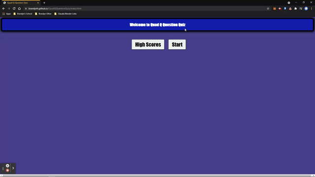

My name is Brandyn Huffer, I am 31. I was born and raised in Texas! I am currently the Assistant
Manager at a Card/hobby store.
Before that I worked in a class room with students with special needs as a TA.
Though none of my work experience points toward programming and coding.
I have had a bit of exposure to programming and coding over the years, and have always
been someone who has gravitated toward tech. Though my knowledge is still lacking, I look
forward to learning more and expanding
my tool kit!
Portfolio
Code Refactoring
This project involved refactoring code for a webpage. Utilizing HTML and CSS
Password Generator
This project generates a random password based off user selected criteria. Utilizing HTML, CSS, and JavaScript

Quad Q Question Quiz
This project is a quiz which checks user selection against correct answers and keeps score. Utilizing HTML, CSS, Javascript, and local storage
Speed Scheduler
This project is a work day planner. It allows the user to input information and save to local storage to be recalled later. Utilizing HTML, CSS, Javascript, and local storage
FullStack Weather Track
This project allows for viewing of weather stats based off of used city input. It also allows for a quick search nearby. Utilizing HTML, CSS, Javascript, Local storage, as well as accessing web-based API's
Thirsty's Brewery Finder
This group project was designed to allow a user to find breweries based off a city search, and maps it. Utilizing HTML, CSS, Javascript, local storage, web-based API's, server-based API's, and GitHub project managment.